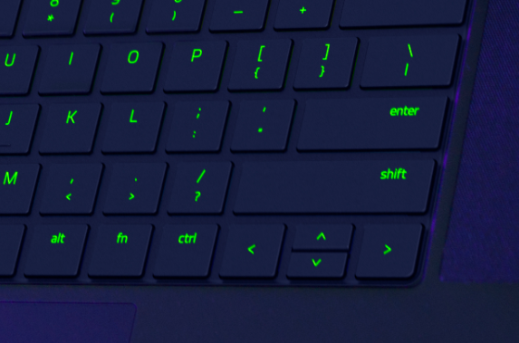
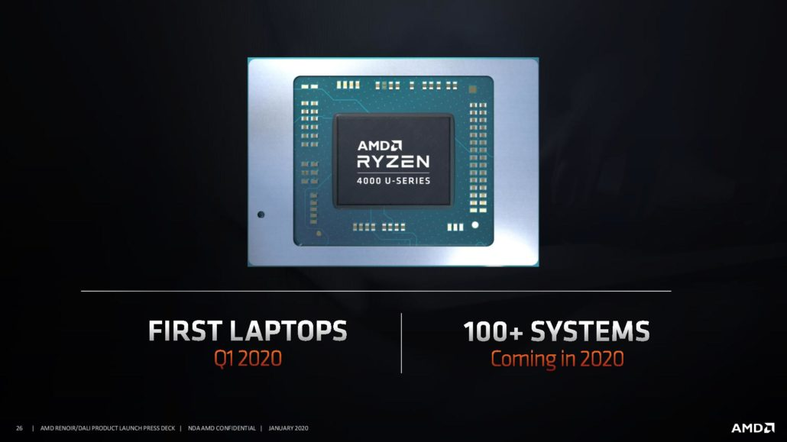

El nuevo Blade 15 de Razer tiene especificaciones
potentes y un teclado mejorado
La nueva computadora portátil para juegos Blade 15 de Razer es una
actualización tanto por dentro como por fuera, con nuevas y potentes
especificaciones de Intel y Nvidia, así como algunos pequeños y
esperados ajustes en el diseño del chasis.

Dos modelos estarán disponibles en mayo: el modelo base por $ 1,600 y el
modelo "avanzado" actualizado, el último de los cuales albergará la CPU
de ocho núcleos Intel 10th Gen i7-10875H (velocidad base de 2.3GHz,
velocidad turbo de 5.1GHz) . En el lado de los gráficos, viene con el
chip gráfico Nvidia GeForce RTX 2070 Super Max-Q para comenzar, y
puede actualizar aún más al RTX 2080 Super Max-Q. El modelo avanzado
está claramente destinado a ser el escaparate del rendimiento de la
informática móvil de próxima generación, por lo que estamos entusiasmados
de tenerlo en nuestras manos.

Una característica que llega a ambos modelos, que tal vez estoy demasiado
entusiasmado, es un remedio a lo que ha sido, durante varias generaciones
de Razer Blade y Blade Stealth, una especie de distribución de teclado
desordenada. Es decir, el nuevo Blade 15 ya no tiene su tecla direccional
hacia arriba incrustada entre la tecla shift derecha y la tecla barra
diagonal / signo de interrogación.
Ryzen 4000 Series de AMD se ve bien hasta ahora
AMD anunció sus procesadores móviles de la serie 4000 en CES 2020 en enero
con el nombre en clave "Renoir". Es el primer procesador construido en
la arquitectura de 7 nm de AMD. Si tuviéramos que imaginar la batalla del
mercado de procesadores entre AMD e Intel, este sería el salto de AMD
para tomar el último pedazo de terreno que Intel tiene sobre AMD,
siendo ese terreno el mercado de procesadores móviles. Desde 2017,
AMD ha cumplido sus promesas de Ryzen con sus arquitecturas Zen que
se hacen cargo del mercado de procesadores de escritorio de alta gama
(HEDT). No solo para consumidores y entusiastas, sino también para
chips de servidores en la nube.

En el CES 2019, Lisa Su reveló 3 de AMD tercera generación de la serie
Ryzen con el Zen 2 arquitectura. Escribí un artículo sobre cómo el 3900X
superó al Core i9900K de Intel en todos los casos de uso que no sean
juegos (juegos de 1080p) a un precio más bajo. Puedes leer mi análisis
de los Ryzen 3900X y 3700X aquí . 3 de AMD tercera generación Ryzen
Threadrippers son una historia similar. El Threadripper 3970X dominó
en casi todas las cargas de trabajo centradas en el creador con un
precio impresionante para el rendimiento. También puede leer mi
análisis de Threadripper 3960X y 3970X aquí.. Mencioné en estos artículos
que AMD comenzó de manera inteligente con el escritorio de bricolaje del
consumidor del canal para mostrar sus procesadores basados en Zen 2.
Ahora, AMD tiene un creciente apoyo de los fabricantes de equipos
originales y va por el terreno elevado en todos los lados. Echemos
un vistazo a lo que AMD anunció con sus procesadores móviles de la
serie 4000 y el impacto que tendrá en el mercado móvil. Me gustaría
comenzar con algunas de las primeras reseñas de Ryzen